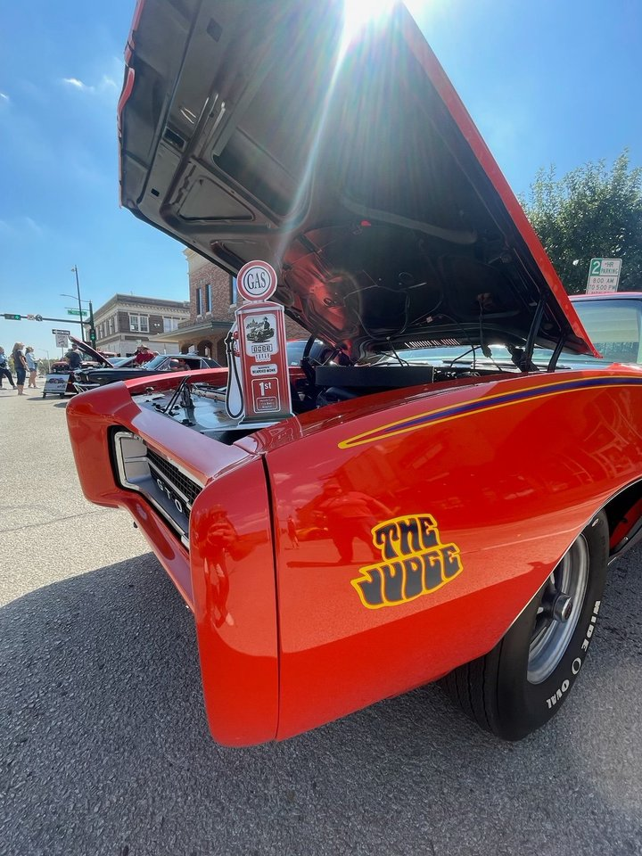
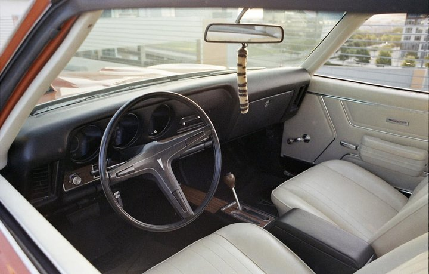
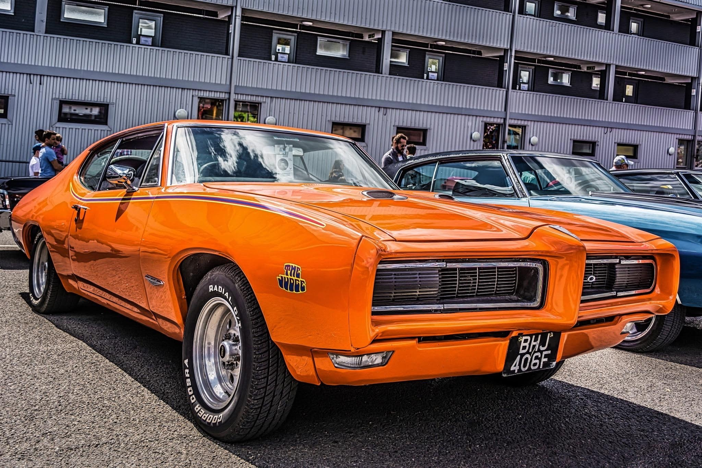
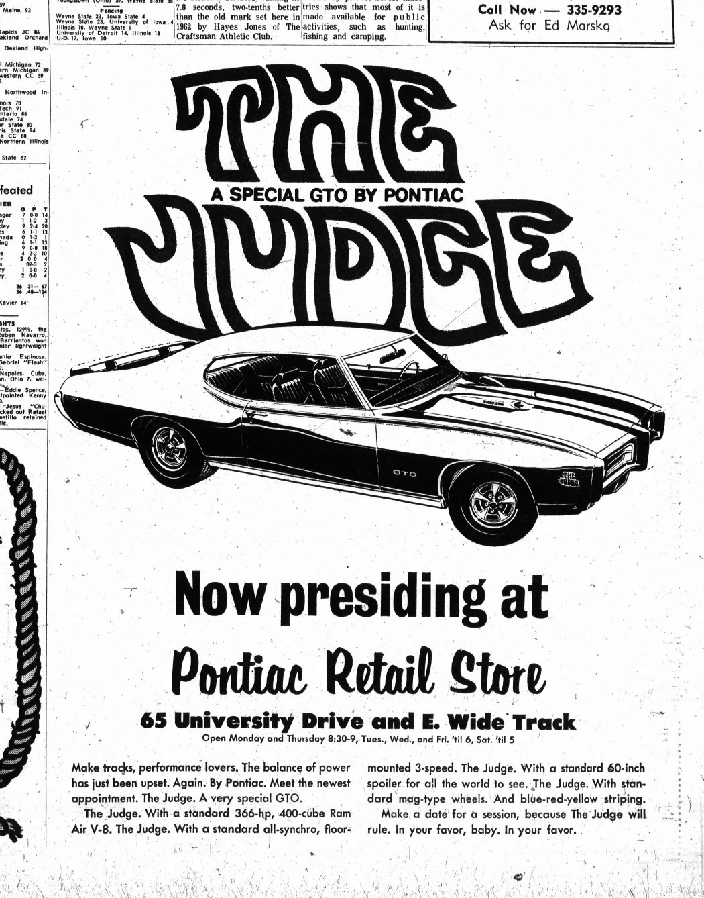

Arlington · 242379R130631
Another DON 00017 sibling · Pat Clark Pontiac, Las Vegas. Compact page with invoice copy and cowl tag.
Arlington page →Last updated: November 9, 2026
Al Diaz’s Framingham Judge 242379G125205. Al’s lead production Judge Hypothesis until a document shows otherwise, with the labeled Pontiac papers around DON 00017.
Main focus · Why this site exists
Al Diaz’s DON 00017 car. Cowl FM 56607 · 01B. PHS invoice ZGA 453185, shipped 01/30/69 to Allen Pontiac, Belleville, N.J. Al’s lead production Judge Hypothesis until a document shows otherwise.




Another DON 00017 sibling · Pat Clark Pontiac, Las Vegas. Compact page with invoice copy and cowl tag.
Arlington page →My 1969 GTO Judge, VIN 242379G125205, was built at Framingham. A question on its build sheet—“What does BY-PASS CODE 2 mean?”—opened a wider look at Pontiac’s own papers: bulletins, memo copies, PHS invoices and cowl tags.
This home page is a short map of the site. Detailed evidence stays on its own page, with every claim labeled under the research standards.
New: Fred Simmonds’ 1989 Judge production-by-plant table · Tier 3 — also at archive.org.
One representative paper for each of the five DON 00017 cars. Open any thumbnail to jump to that car’s documents on the DON 00017 page.
Each card opens the full page. DON 00017 papers and thumbnails live on the DON 00017 page and its Arlington detail page—not here.
Starts with Al’s Lead Production Car Declaration, then the featured Framingham Judge 242379G125205 and the other DON 00017 cars in compact form.
Open DON 00017 →Compact sibling record for VIN 242379R130631.
Open Arlington →Factory-document timeline from the September 1968 bulletins through the May 1969 Goad memo.
Open timeline →How the investigation developed: the personal question, earlier forum work, and an illustrated PMD document trail.
Open research history →Tiers 1–4, claim labels, and the Simmonds 1989 plant table. How every statement on this site is graded.
Open sources & policy →What is still unresolved—including the build-sheet code and records not yet in hand.
Open questions →Short definitions for DON, ship-to 991, pattern car, option 554 / WT1, and related terms.
Open glossary →A plain guide to reading Pontiac Historic Services invoices and related paperwork.
Open PHS guide →Who Al Diaz is and how this project is framed.
Open about →Own a 1969 Judge? Share PHS invoices and cowl-tag photos to strengthen the record.
Open submit page →Selected videos sit beside their topics on the DON 00017 and research-history pages. Claims stay tied to the records, not to titles.
DON 00017 videos →For Al’s video commentary alongside the written work, Follow Al Diaz on YouTube.
More on the research-history page. Documentary claims remain tied to the records.
Illustrations and period marketing art. These are not evidence for any VIN or factory claim. Tap a thumbnail for the full image.


Al’s car photos appear in the hero above. Other images below are for illustration only unless a caption says otherwise.


AI assistance was used to compile and format this site. Every claim was drawn from Al Diaz's research files and is labeled under his Research Standards & Evidence Policy v1.0. Corrections are welcome and will be dated.